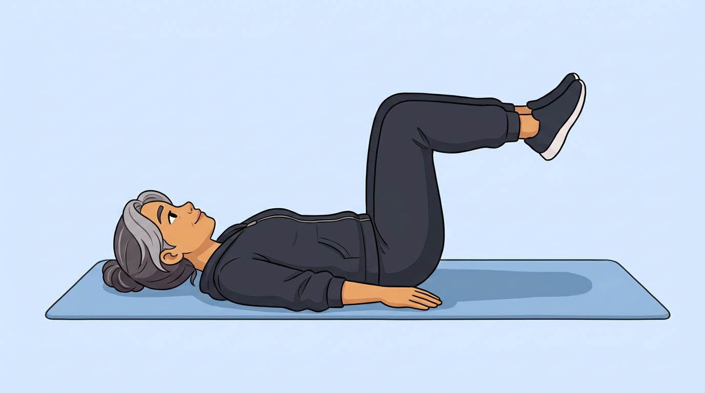
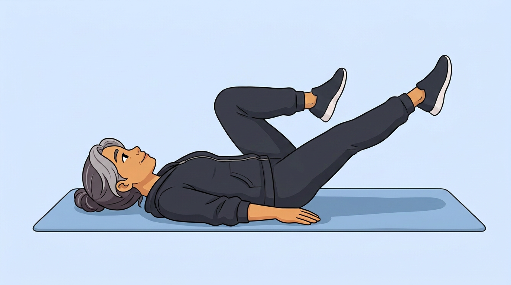
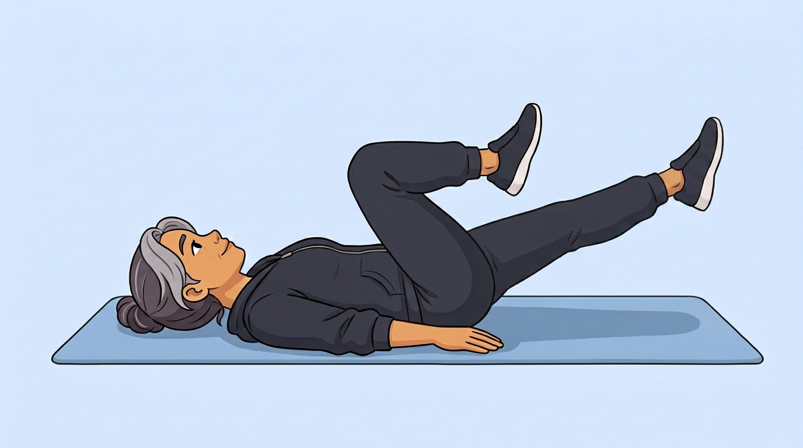

08 · Bicycle crunch
Relatio's bicycle crunch next to COGITO AI's, shown by the Coach woman. Right side view from her right side.
Three repetitions, 3.8 s each, then it stops. Pauses at peak of each half-cycle.
Relatio
Bicycle crunch (Relatio clip)
Left side view. Loops under a countdown.
COGITO AI
Bicycle crunch, Coach woman
Right side view. 3 reps (11.4 s), then stops.
| Relatio | COGITO AI | |
|---|---|---|
| Movement | Bicycle crunch | Bicycle crunch |
| Shown by | Anatomy figure | Coach woman |
| Camera | Left side view | Right side view |
| One rep | ~3.9 s | 3.8 s |
| What plays | Loops under a countdown | 3 reps (11.4 s), then stops |
| Sides | Both legs alternate within each cycle; no mirroring needed | |
Pictures and prompts
Veo 3.1 Fast halves (A and B) assembled into a full cycle. Keyframes drawn by Gemini from the start picture.
Start picture

Peak A picture (left knee in, right leg extended)

Peak B picture (right knee bent, left leg extended)

Start picture prompt
Flat 2D cartoon illustration in exactly the style, line weight and colours of the reference image. Soft blue exercise mat on a plain pale blue background. No new colours, no text, no numbers, no logos, no other people, no props except what the movement needs. The person is the same athletic woman with the face, hair, skin tone and outfit of the reference image — keep every clothing colour and every hair detail exactly. Flat 2D cartoon illustration in exactly the style, line weight and colours of the reference image. Soft blue exercise mat on a plain pale blue background. Side view, seen from her RIGHT side: she lie on her back along the mat, head at the LEFT of the frame resting on the mat, legs toward the RIGHT. Both arms lie flat on the mat alongside the body, open, EMPTY hands palm down beside the hips. Both hips and knees are bent to 90 degrees, thighs pointing straight up and shins parallel to the mat, feet together in the air. The dark zip hoodie is zipped fully closed all the way up, with no white or bare skin visible at the chest or waist. She keeps the same dark trainers with white soles on both feet — no bare feet. Keep the face, hair, outfit and colours exactly as in the reference image. The whole figure and the mat are visible with margin, centred in a 16:9 frame. Keep the face, hair, outfit and colours exactly as in the reference image.
Peak A prompt (Gemini keyframe edit)
Edit this image. Change only the person's pose: her LEFT knee (the far leg, upper in the frame) has drawn in toward the chest, thigh past vertical, while her RIGHT leg (the near leg, lower in the frame) has stretched out long toward the RIGHT of the frame lifted high at 45 degrees above the mat — the leg must be clearly raised well off the mat, not low or nearly flat. Knee almost straight, toes pointed. The near right leg is the LOWER leg in the frame; the far left knee is the UPPER leg pulled toward the chest. Head, shoulders, back, arms and hands stay flat on the mat. The hoodie stays fully closed, no bare skin. Dark trainers with white soles stay on both feet. The background, the mat, every object on it, the framing, and the person's face, hair and clothes stay exactly where and as they are.
Peak B prompt (Gemini keyframe edit)
Edit this image. Change only the person's pose: her RIGHT knee (the near leg, lower in the frame) has drawn in toward the chest with the thigh past vertical and the shin parallel to the floor — knee bent at 90 degrees, shin horizontal. Her LEFT leg (the far leg, upper in the frame) has stretched out long toward the RIGHT of the frame lifted high at 60 degrees above the mat — clearly raised well off the mat, pointing upward and forward, knee almost straight, toes pointed. The far left leg is the UPPER leg extended; the near right knee is the LOWER leg pulled in with shin parallel to floor. Head, shoulders, back, arms and hands stay flat on the mat. The hoodie stays fully closed, no bare skin. Dark trainers with white soles stay on both feet. The background, the mat, every object on it, the framing, and the person's face, hair and clothes stay exactly where and as they are.
Motion A prompt (Veo)
Flat 2D cartoon illustration in exactly the style, line weight and colours of the reference image. Soft blue exercise mat on a plain pale blue background. No new colours, no text, no numbers, no logos, no other people, no props except what the movement needs. The person is the same athletic woman with the face, hair, skin tone and outfit of the reference image — keep every clothing colour and every hair detail exactly. Locked-off tripod shot, no zoom, no pan, no camera movement; the person stays the same size and position in the frame. Over four seconds, she pull the left knee in while stretching the right leg out long, like pedalling, moving smoothly and steadily from the pose in the first frame to the pose in the last frame, arriving exactly at the last frame. Nothing else happens: no turning around, no walking away, no objects appear or are picked up, no extra movements. Keep the face, hair, outfit, the mat and the background exactly as in the image. Locked-off tripod shot, no zoom, no pan, no camera movement; the person stays the same size and position in the frame.
Motion B prompt (Veo)
Flat 2D cartoon illustration in exactly the style, line weight and colours of the reference image. Soft blue exercise mat on a plain pale blue background. No new colours, no text, no numbers, no logos, no other people, no props except what the movement needs. The person is the same athletic woman with the face, hair, skin tone and outfit of the reference image — keep every clothing colour and every hair detail exactly. Locked-off tripod shot, no zoom, no pan, no camera movement; the person stays the same size and position in the frame. Over four seconds, she extend the far left leg (upper in the frame) straight out from its parallel position — the leg stays parallel to the mat as it straightens, no lifting up or dropping down; both arms and hands stay completely flat on the mat at all times, the back stays flat, no twisting, moving smoothly and steadily from the pose in the first frame to the pose in the last frame, arriving exactly at the last frame. Nothing else happens: no turning around, no walking away, no objects appear or are picked up, no extra movements. Keep the face, hair, outfit, the mat and the background exactly as in the image. Locked-off tripod shot, no zoom, no pan, no camera movement; the person stays the same size and position in the frame.